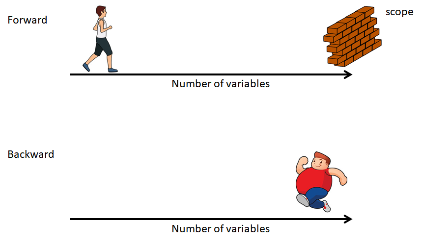
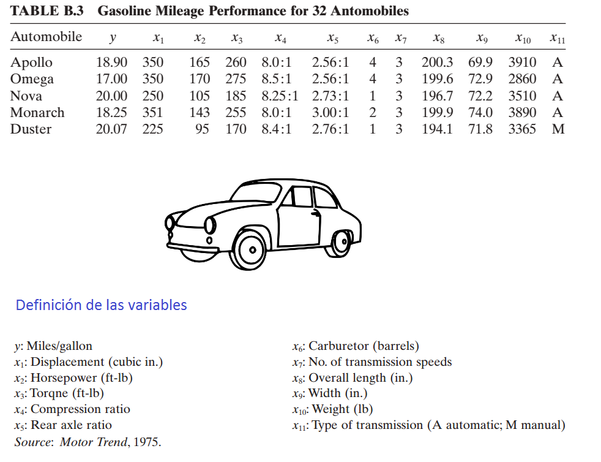
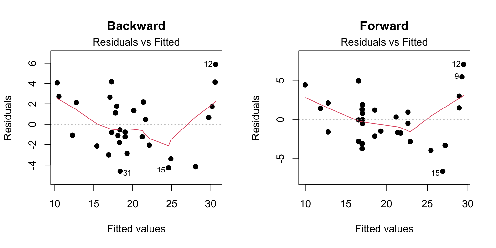
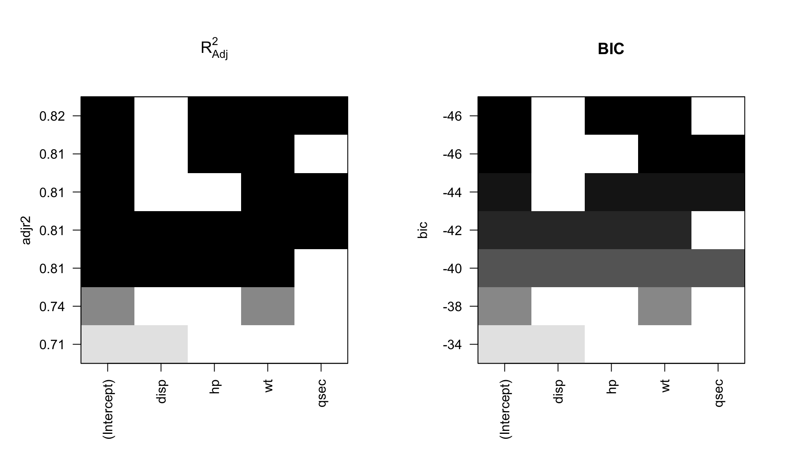

logLik(object)
AIC(object, k=2)16 Selección de variables
En este capítulo se muestra como realizar selección de variables en un modelo de regresión lineal.
Akaike Information Criterion (\(AIC\))
El \(AIC\) se define como:
\[AIC = - 2 \times logLik + k \times n_{par},\]
donde \(logLik\) corresponde al valor de log-verosimilitud del modelo para el vector de parámetros \(\hat{\Theta}\), \(k\) es un valor de penalización por el exceso de parámetros y \(n_{par}\) corresponde al número de parámetros del modelo.
Se debe recordar siempre que:
- El mejor modelo es aquel que \(logLik\) ↑.
- El mejor modelo es aquel que \(AIC\) ↓.
Cuando el valor de penalización \(k=\log(n)\) entonces el \(AIC\) se llamada en \(BIC\) o \(SBC\) (Schwarz’s Bayesian criterion).
Funciones logLik y AIC
La función logLik sirve para obtener el valor de log-verosimilitud de un modelo y la función AIC entrega el Akaike Information Criterion. La estructura de ambas funciones se muestra a continuación.
Métodos
Los métodos para realizar selcción de variables se pueden clasificar de la siguiente manera:
- Todas las regresiones posibles.
- Selección de variables.
- Forward
- Backward
A continuación una imagen ilustrativa para entender ambos métodos.

- Un término ingresa al modelo si su presencia disminuye el \(AIC\).
- Un términa sale del modelo si su ausencia disminuye el \(AIC\).
Función stepAIC
La función stepAIC del paquete MASS (Ripley and Venables 2025) es útil para hacer selección de variables en un modelo de regresión. La estructura de la función se muestra a continuación.
stepAIC(object, scope, scale = 0,
direction = c("both", "backward", "forward"),
trace = 1, keep = NULL, steps = 1000, use.start = FALSE,
k = 2, ...)Algunos de los argumentos son:
object: un objeto con un modelo.scope: fórmula(s) con los límites de búsqueda.direction: los posibles valores sonboth,backward,forward.trace: valor lógico para indicar si se desea ver el paso a paso de la selección.k: valor de penalidad, por defecto es 2.
Ejemplo
En este ejemplo se busca encontrar un modelo de regresion lineal que explique la variable respuesta \(y\) en función de las covariables \(x_1\) a \(x_{11}\), los datos provienen del ejercicio 9.5 del libro de Montgomery, Peck and Vining (2003).
A continuación se muestra el encabezado de la base de datos y la definición de las variables.

Nota: Type of transmission (1=automatic, 0=manual).
Solución
Antes de iniciar es necesario revisar si hay NA's y eliminarlos.
library(MPV) # Aqui estan los datos
table.b3[22:26, ] # Can you see the missing values? y x1 x2 x3 x4 x5 x6 x7 x8 x9 x10 x11
22 21.47 360.0 180 290 8.4 2.45 2 3 214.2 76.3 4250 1
23 16.59 400.0 185 NA 7.6 3.08 4 3 196.0 73.0 3850 1
24 31.90 96.9 75 83 9.0 4.30 2 5 165.2 61.8 2275 0
25 29.40 140.0 86 NA 8.0 2.92 2 4 176.4 65.4 2150 0
26 13.27 460.0 223 366 8.0 3.00 4 3 228.0 79.8 5430 1datos <- table.b3[-c(23, 25), ]El objeto datos tiene la base de datos sin las líneas con NA, lo mismo se hubiese podido realizar usando la función na.omit.
Aplicación del método backward
Vamos a crear un modelo saturado, es decir, el modelo mayor a considerar.
full.model <- lm(y ~ ., data=datos)
summary(full.model)
Call:
lm(formula = y ~ ., data = datos)
Residuals:
Min 1Q Median 3Q Max
-5.3441 -1.6711 -0.4486 1.4906 5.2508
Coefficients:
Estimate Std. Error t value Pr(>|t|)
(Intercept) 17.339838 30.355375 0.571 0.5749
x1 -0.075588 0.056347 -1.341 0.1964
x2 -0.069163 0.087791 -0.788 0.4411
x3 0.115117 0.088113 1.306 0.2078
x4 1.494737 3.101464 0.482 0.6357
x5 5.843495 3.148438 1.856 0.0799 .
x6 0.317583 1.288967 0.246 0.8082
x7 -3.205390 3.109185 -1.031 0.3162
x8 0.180811 0.130301 1.388 0.1822
x9 -0.397945 0.323456 -1.230 0.2344
x10 -0.005115 0.005896 -0.868 0.3971
x11 0.638483 3.021680 0.211 0.8350
---
Signif. codes: 0 '***' 0.001 '**' 0.01 '*' 0.05 '.' 0.1 ' ' 1
Residual standard error: 3.227 on 18 degrees of freedom
Multiple R-squared: 0.8355, Adjusted R-squared: 0.7349
F-statistic: 8.31 on 11 and 18 DF, p-value: 5.231e-05De la tabla anterior se puede pensar en que hay un efecto de enmascaramiento entre las variables ya que ninguna parece significativa marginalmente.
Se usa la función stepAIC y se elije trace=TRUE para obtener detalles del proceso de selección.
library(MASS) # Para poder usar la funcion stepAIC
modback <- stepAIC(full.model, trace=TRUE, direction="backward")Start: AIC=78.96
y ~ x1 + x2 + x3 + x4 + x5 + x6 + x7 + x8 + x9 + x10 + x11
Df Sum of Sq RSS AIC
- x11 1 0.465 187.87 77.036
- x6 1 0.632 188.03 77.063
- x4 1 2.418 189.82 77.346
- x2 1 6.462 193.86 77.979
- x10 1 7.836 195.24 78.190
- x7 1 11.065 198.47 78.683
<none> 187.40 78.962
- x9 1 15.758 203.16 79.384
- x3 1 17.770 205.17 79.679
- x1 1 18.736 206.14 79.820
- x8 1 20.047 207.45 80.011
- x5 1 35.864 223.26 82.215
Step: AIC=77.04
y ~ x1 + x2 + x3 + x4 + x5 + x6 + x7 + x8 + x9 + x10
Df Sum of Sq RSS AIC
- x6 1 0.536 188.40 75.121
- x4 1 2.363 190.23 75.411
- x2 1 6.642 194.51 76.078
- x10 1 7.985 195.85 76.285
<none> 187.87 77.036
- x7 1 14.124 201.99 77.211
- x9 1 16.914 204.78 77.622
- x3 1 17.815 205.68 77.754
- x1 1 18.280 206.15 77.822
- x8 1 20.301 208.17 78.114
- x5 1 36.370 224.24 80.345
Step: AIC=75.12
y ~ x1 + x2 + x3 + x4 + x5 + x7 + x8 + x9 + x10
Df Sum of Sq RSS AIC
- x4 1 3.451 191.85 73.666
- x2 1 6.932 195.33 74.205
- x10 1 9.351 197.75 74.574
<none> 188.40 75.121
- x7 1 14.473 202.87 75.342
- x3 1 17.802 206.20 75.830
- x9 1 18.146 206.55 75.880
- x1 1 18.780 207.18 75.972
- x8 1 21.244 209.65 76.326
- x5 1 39.332 227.73 78.809
Step: AIC=73.67
y ~ x1 + x2 + x3 + x5 + x7 + x8 + x9 + x10
Df Sum of Sq RSS AIC
- x2 1 10.780 202.63 73.306
- x7 1 11.113 202.97 73.355
<none> 191.85 73.666
- x10 1 14.988 206.84 73.923
- x1 1 16.602 208.46 74.156
- x9 1 18.072 209.92 74.366
- x3 1 21.314 213.17 74.826
- x8 1 28.835 220.69 75.867
- x5 1 40.323 232.18 77.389
Step: AIC=73.31
y ~ x1 + x3 + x5 + x7 + x8 + x9 + x10
Df Sum of Sq RSS AIC
- x7 1 10.457 213.09 72.815
- x3 1 10.595 213.23 72.835
- x1 1 11.998 214.63 73.032
- x9 1 12.643 215.28 73.122
- x10 1 13.887 216.52 73.295
<none> 202.63 73.306
- x8 1 27.665 230.30 75.145
- x5 1 30.191 232.82 75.472
Step: AIC=72.82
y ~ x1 + x3 + x5 + x8 + x9 + x10
Df Sum of Sq RSS AIC
- x3 1 4.8720 217.96 71.494
- x9 1 5.2049 218.29 71.539
- x1 1 5.3212 218.41 71.555
<none> 213.09 72.815
- x10 1 18.3677 231.46 73.296
- x5 1 23.3458 236.44 73.934
- x8 1 26.0316 239.12 74.273
Step: AIC=71.49
y ~ x1 + x5 + x8 + x9 + x10
Df Sum of Sq RSS AIC
- x1 1 0.765 218.73 69.599
- x9 1 5.863 223.82 70.290
<none> 217.96 71.494
- x10 1 20.291 238.25 72.164
- x5 1 23.020 240.98 72.506
- x8 1 31.634 249.59 73.559
Step: AIC=69.6
y ~ x5 + x8 + x9 + x10
Df Sum of Sq RSS AIC
- x9 1 5.097 223.82 68.290
<none> 218.73 69.599
- x5 1 40.404 259.13 72.684
- x8 1 57.407 276.13 74.591
- x10 1 135.105 353.83 82.029
Step: AIC=68.29
y ~ x5 + x8 + x10
Df Sum of Sq RSS AIC
<none> 223.82 68.290
- x5 1 36.314 260.14 70.800
- x8 1 52.960 276.78 72.661
- x10 1 194.838 418.66 85.076Para obtener un resumen del proceso se usa:
modback$anovaStepwise Model Path
Analysis of Deviance Table
Initial Model:
y ~ x1 + x2 + x3 + x4 + x5 + x6 + x7 + x8 + x9 + x10 + x11
Final Model:
y ~ x5 + x8 + x10
Step Df Deviance Resid. Df Resid. Dev AIC
1 18 187.4007 78.96155
2 - x11 1 0.4648362 19 187.8655 77.03587
3 - x6 1 0.5356445 20 188.4012 75.12128
4 - x4 1 3.4514854 21 191.8526 73.66591
5 - x2 1 10.7796848 22 202.6323 73.30587
6 - x7 1 10.4571693 23 213.0895 72.81545
7 - x3 1 4.8720101 24 217.9615 71.49363
8 - x1 1 0.7654631 25 218.7270 69.59881
9 - x9 1 5.0970905 26 223.8241 68.28989Para ver la tabla de resultados del modelo modback.
summary(modback)
Call:
lm(formula = y ~ x5 + x8 + x10, data = datos)
Residuals:
Min 1Q Median 3Q Max
-4.6101 -1.9868 -0.6613 2.0369 5.8811
Coefficients:
Estimate Std. Error t value Pr(>|t|)
(Intercept) 4.590404 11.771925 0.390 0.6998
x5 2.597240 1.264562 2.054 0.0502 .
x8 0.217814 0.087817 2.480 0.0199 *
x10 -0.009485 0.001994 -4.757 6.38e-05 ***
---
Signif. codes: 0 '***' 0.001 '**' 0.01 '*' 0.05 '.' 0.1 ' ' 1
Residual standard error: 2.934 on 26 degrees of freedom
Multiple R-squared: 0.8035, Adjusted R-squared: 0.7808
F-statistic: 35.44 on 3 and 26 DF, p-value: 2.462e-09Aplicación del método forward
Para aplicar este metodo se debe crear un modelo vacío (empty.model) del cual iniciará el proceso. Es necesario definir un punto final de búsqueda, ese punto es una fórmula que en este caso llamaremos horizonte. A continuación el codigo.
empty.model <- lm(y ~ 1, data=datos)
horizonte <- formula(y ~ x1 + x2 + x3 + x4 + x5 + x6 + x7 + x8 + x9 + x10 + x11)Se usa la función stepAIC y se elije trace=FALSE para que NO se muestren los detalles del proceso de selección.
modforw <- stepAIC(empty.model, trace=FALSE, direction="forward", scope=horizonte)
modforw$anovaStepwise Model Path
Analysis of Deviance Table
Initial Model:
y ~ 1
Final Model:
y ~ x1 + x4
Step Df Deviance Resid. Df Resid. Dev AIC
1 29 1139.1050 111.10402
2 + x1 1 866.49528 28 272.6097 70.20532
3 + x4 1 18.57161 27 254.0381 70.08861Para ver la tabla de resultados del modelo modforw.
summary(modforw)
Call:
lm(formula = y ~ x1 + x4, data = datos)
Residuals:
Min 1Q Median 3Q Max
-6.5011 -2.1243 -0.3884 1.9964 6.9582
Coefficients:
Estimate Std. Error t value Pr(>|t|)
(Intercept) 7.179421 18.787955 0.382 0.705
x1 -0.044479 0.005225 -8.513 3.98e-09 ***
x4 3.077228 2.190294 1.405 0.171
---
Signif. codes: 0 '***' 0.001 '**' 0.01 '*' 0.05 '.' 0.1 ' ' 1
Residual standard error: 3.067 on 27 degrees of freedom
Multiple R-squared: 0.777, Adjusted R-squared: 0.7605
F-statistic: 47.03 on 2 and 27 DF, p-value: 1.594e-09Como la variable \(x_4\) no es significativa, entonces se puede refinar o actualizar el modelo modforw sacando \(x_4\), esto se puede realizar fácilmente por medio de la función update así:
modforw <- update(modforw, y ~ x1)
summary(modforw)
Call:
lm(formula = y ~ x1, data = datos)
Residuals:
Min 1Q Median 3Q Max
-6.6063 -2.0276 -0.0457 1.4531 7.0213
Coefficients:
Estimate Std. Error t value Pr(>|t|)
(Intercept) 33.490010 1.535476 21.811 < 2e-16 ***
x1 -0.047026 0.004985 -9.434 3.43e-10 ***
---
Signif. codes: 0 '***' 0.001 '**' 0.01 '*' 0.05 '.' 0.1 ' ' 1
Residual standard error: 3.12 on 28 degrees of freedom
Multiple R-squared: 0.7607, Adjusted R-squared: 0.7521
F-statistic: 89 on 1 and 28 DF, p-value: 3.429e-10En este enlace usted podrá encontrar la respuesta que le dieron a Audrey al preguntar “Why stepAIC gives a model with insignificant variables?”.
Aplicación del método both
Para aplicar este método se debe crear un modelo vacío del cual iniciará el proceso. Es necesario definir un punto final de búsqueda, ese punto es una formula que en este caso llamaremos horizonte. A continuación el código.
modboth <- stepAIC(empty.model, trace=FALSE, direction="both", scope=horizonte)
modboth$anovaStepwise Model Path
Analysis of Deviance Table
Initial Model:
y ~ 1
Final Model:
y ~ x1 + x4
Step Df Deviance Resid. Df Resid. Dev AIC
1 29 1139.1050 111.10402
2 + x1 1 866.49528 28 272.6097 70.20532
3 + x4 1 18.57161 27 254.0381 70.08861El modelo modboth y modforw son el mismo.
A continuación vamos a realizar una comparación de los modelos obtenidos.
Comparando \(R^2_{Adj}\)
Para extraer el \(R^2_{Adj}\) de la tabla de resultados se usa:
summary(modback)$adj.r.squared[1] 0.7808368summary(modforw)$adj.r.squared[1] 0.7521337Comparando \(\hat{\sigma}\)
Para extraer el \(\hat{\sigma}\) de la tabla de resultados se usa:
summary(modback)$sigma[1] 2.934045summary(modforw)$sigma[1] 3.120266Comparando los residuales
par(mfrow=c(1, 2))
plot(modback, main="Backward", pch=19, cex=1, which=1)
plot(modforw, main="Forward", pch=19, cex=1, which=1)
Ejercicios
- ¿Qué patrón observa en los gráficos?
- Para cada uno de los dos modelos incluya términos cuadráticos con el objetivo de explicar ese patrón cuadrático no explicado y mostrado en los gráficos de residuales anteriores.
Funciones addterm y dropterm
Estas dos funciones pertenecen al paquete MASS (Ripley and Venables 2025) y son útiles para agregar/quitar 1 variable con respecto al modelo ingresado. A continuación la estructura de las funciones.
addterm(object, ...)
dropterm (object, ...)Ejemplo
Usando datos anteriores ajuste un modelo para explicar y en función de x2 y x5, luego use addterm para determinar cual de las variables x1, x4 y x6 se debería ingresar.
mod1 <- lm(y ~ x2 + x5, data=datos)
maximo <- formula(~ x1 + x2 + x3 + x4 + x5 + x6)
addterm(mod1, scope=maximo)Single term additions
Model:
y ~ x2 + x5
Df Sum of Sq RSS AIC
<none> 353.19 79.974
x1 1 88.511 264.67 73.319
x3 1 47.296 305.89 77.661
x4 1 19.915 333.27 80.233
x6 1 19.452 333.73 80.274De la salida anterior se ve que ingresar x1 mejoraría el modelo porque lo llevaría de un \(AIC=79.974\) a uno con \(AIC=73.319\).
Paquete mixlm
El paquete mixlm creado por Liland (2025) contiene un buen número de funciones para modelación. Algunas de las funciones a destacar son forward, backward, stepWise.
Este paquete contiene otras funciones
lm y glm que se pueden confundir con las funciones lm y glm del paquete stats. Por esta razón el usuario debe tener cuidado de usar la apropiada, en estos casos se recomienda usar stats::lm(y ~ x) o mixlm::lm(y ~ x) para obligar a R a que use la que el usuario desea.
Ejemplo
En este ejemplo se retoman los datos del ejercicio 9.5 del libro de Montgomery, Peck and Vining (2003). En este ejemplo se busca encontrar un modelo de regresion lineal que explique la variable respuesta \(y\) en función de las covariables \(x_1\) a \(x_{11}\), usando el modelo backward y que todas las variables sean significativas a un nivel del 4%.
Para realizar lo solicitado se usa el siguiente código:
library(MPV) # Aqui estan los datos
datos <- table.b3[-c(23, 25), ] # Eliminando 2 observaciones con NA
modelo <- lm(y ~ x1 + x2 + x3 + x4 + x5 + x6 + x7 + x8 + x9 + x10 + x11,
data=datos)
library(mixlm)
backward(modelo, alpha=0.04)Backward elimination, alpha-to-remove: 0.04
Full model: y ~ x1 + x2 + x3 + x4 + x5 + x6 + x7 + x8 + x9 + x10 + x11
Step RSS AIC R2pred Cp F value Pr(>F)
x11 1 187.87 77.036 0.41925 10.04465 0.0446 0.83503
x6 2 188.40 75.121 0.51334 8.09610 0.0542 0.81844
x4 3 191.85 73.666 0.53495 6.42762 0.3664 0.55178
x2 4 202.63 73.306 0.54991 5.46301 1.1799 0.28968
x7 5 213.09 72.815 0.61766 4.46743 1.1353 0.29819
x3 6 217.96 71.494 0.63898 2.93539 0.5259 0.47566
x1 7 218.73 69.599 0.66089 1.00892 0.0843 0.77406
x9 8 223.82 68.290 0.73638 -0.50150 0.5826 0.45244
x5 9 260.14 70.800 0.70705 0.98652 4.2184 0.05017 .
---
Signif. codes: 0 '***' 0.001 '**' 0.01 '*' 0.05 '.' 0.1 ' ' 1
Call:
lm(formula = y ~ x8 + x10, data = datos)
Coefficients:
(Intercept) x8 x10
16.23496 0.21234 -0.01022 De la salida anterior vemos que el modelo final es y ~ x8 + x10. Si comparamos este modelo con el obtenido al usar la función stepAIC, vemos que se eliminó la variable x5 ya que su valor-P era 5.02%, superior al límite definido aquí del 4%.
Paquete leaps
El paquete leaps creado por Fortran code by Alan Miller (2020) está basado en Fortran y es útil cuando nos interese encontrar subconjuntos de covariables para optimizar las características de un modelo.
La función regsubsets realiza una búsqueda exhaustiva de los mejores subconjuntos de variables \(x\) para explicar \(y\). La búsqueda utiliza un algoritmo eficiente de ramificación y unión.
La estructura de la función es la siguiente:
regsubsets(x, data, nbest, nvmax, ...)Algunos de los parámetros más usuados en la función son:
x: fórmula usual.data: marco de datos.nbest: número de subconjuntos de cada tamaño a guardar.nvmax: máximo número de subconjuntos a evaluar.
Ejemplo
En este ejemplo vamos a usar la base de datos mtcars para encontrar los dos mejores modelos con 1, 2, 3 y 4 covariables para explicar mpg en función de las variables disp, hp, wt, qsec.
Para hacer la búsqueda usamos el siguiente código. nbest=2 porque queremos los mejores dos modelos con cada número de covariables posible.
library(leaps)
model_subset <- regsubsets(mpg ~ disp + hp + wt + qsec,
data=mtcars, nbest=2, nvmax=13)El model_subset es un objeto de la clase regsubsets y es posible usar la función S3 summary para objetos de esa clase. A continuación los elementos que componen summary.
names(summary(model_subset))[1] "which" "rsq" "rss" "adjr2" "cp" "bic" "outmat" "obj" El primer elemento del summary se obtiene así:
summary(model_subset)$which (Intercept) disp hp wt qsec
1 TRUE FALSE FALSE TRUE FALSE
1 TRUE TRUE FALSE FALSE FALSE
2 TRUE FALSE TRUE TRUE FALSE
2 TRUE FALSE FALSE TRUE TRUE
3 TRUE FALSE TRUE TRUE TRUE
3 TRUE TRUE TRUE TRUE FALSE
4 TRUE TRUE TRUE TRUE TRUEDe las dos primeras líneas de la salida anterior se observa que los dos mejores modelos con una sola covariable son mpg ~ wt y mpg ~ disp. De forma similar, los dos mejores modelos con dos covariables son mpg ~ hp + wt y mpg ~ wt + qsec. De forma análoga se interpretan las líneas de la salida anterior.
Es posible mostrar gráficamente los resultados anteriores usando el método S3 plot para objetos de la clase regsubsets. A continuación la estructura de la función plot. El parámetro scale nos permite explorar los mejores modelos para cada uno de los cuatro criterios \(BIC\), \(C_p\), \(R^2_{adj}\) y \(R^2\).
plot(x, labels=obj$xnames, main=NULL,
scale=c("bic", "Cp", "adjr2", "r2"),
col=gray(seq(0, 0.9, length = 10)),...)A continuación el código para mostrar gráficamente los mejores modelos usando el criterio \(R^2_{adj}\) y \(BIC\).
par(mfrow=c(1, 2))
plot(model_subset, scale="adjr2", main=expression(R[Adj]^2))
plot(model_subset, scale="bic", main="BIC")
De la figura de la izquierda vemos que:
- El modelo con mayor \(R^2_{adj}\) es
mpg ~ hp + wt + qsec. - El modelo
mpg ~ hp + wttiene igual \(R^2_{adj}\) quempg ~ wt + qsec. - El mejor modelo con una sola covariable es
mpg ~ wt.
La figura de la derecha se puede analizar de forma análoga.
Para obtener los valores exacto de \(R^2_{adj}\) y \(BIC\) mostrados en la figura anterior se usa el siguiente código.
summary(model_subset)$adjr2[1] 0.7445939 0.7089548 0.8148396 0.8144448 0.8170643 0.8082829 0.8107212summary(model_subset)$bic[1] -37.79462 -33.61466 -45.70597 -45.63781 -43.74996 -42.24960 -40.35723Para encontrar el modelo con el mejor \(BIC\) se puede usar lo siguiente:
which(summary(model_subset)$bic == min(summary(model_subset)$bic))[1] 3Para determinar la estructura del modelo 3 identificado en la salida anterior usamos:
summary(model_subset)$which[3, ](Intercept) disp hp wt qsec
TRUE FALSE TRUE TRUE FALSE Funciones para el curso Estadística II
El curso de Estadística II tiene las funciones especiales (myStepwise y myBackward) para realizar la selección de variables como se ha explicado en clase.
La forma de usar las dos funciones para los tres métodos explicados en clase se muestra a continuación.
- Método forward:
myStepwise(full.model=full_mod, alpha.to.enter=alpha, alpha.to.leave=1). - Método backward:
myBackward(base.full=mod, alpha.to.leave=alpha). - Método both:
myStepwise(full.model=mod, alpha.to.enter=alpha, alpha.to.leave=alpha).
El objeto full_mod es el modelo saturado con todas los términos de interés. La cantidad alpha corresponde al nivel de significancia de las pruebas individuales de significancia. Sólo el método forward se fija alpha.to.leave=1 para evitar la salida de alguna de las covariables que ingresó.
Para el método forward y both se usa la misma función
myStepwise. Cuando queremos forward usamos dentro alpha.to.leave=1 y cuando queremos both usamos alpha.to.leave=alpha.
Para accerder a estas funciones se corre el siguiente código:
source("https://raw.githubusercontent.com/fhernanb/Trabajos_Est_2/main/Trabajo%201/funciones.R")Ejemplo
En este ejemplo se busca encontrar un modelo de regresion lineal que explique la variable respuesta \(y\) en función de las covariables \(x_1\) a \(x_{11}\), los datos provienen del ejercicio 9.5 del libro de Montgomery, Peck and Vining (2003).
A continuación se muestra el encabezado de la base de datos y la definición de las variables.
Nota: Type of transmission (1=automatic, 0=manual).
Aplique los tres métodos de búsqueda vistos en clase usando \(\alpha=0.05\) para las pruebas de hipótesis de individuales de significancia de las variables.
Solución
Antes de iniciar es necesario revisar si hay NA's y eliminarlos.
library(MPV) # Aqui estan los datos
table.b3[22:26, ] # Can you see the missing values? y x1 x2 x3 x4 x5 x6 x7 x8 x9 x10 x11
22 21.47 360.0 180 290 8.4 2.45 2 3 214.2 76.3 4250 1
23 16.59 400.0 185 NA 7.6 3.08 4 3 196.0 73.0 3850 1
24 31.90 96.9 75 83 9.0 4.30 2 5 165.2 61.8 2275 0
25 29.40 140.0 86 NA 8.0 2.92 2 4 176.4 65.4 2150 0
26 13.27 460.0 223 366 8.0 3.00 4 3 228.0 79.8 5430 1datos <- table.b3[-c(23, 25), ]El objeto datos tiene la base de datos sin las líneas con NA, lo mismo se hubiese podido realizar usando la función na.omit.
Ahora vamos a ajustar el modelo saturado, es decir, el modelo con todas las covariables.
mod <- lm(y ~ ., data=datos)Para aplicar el método Forward visto en clase usamos la siguiente instrucción.
attach(datos)
mod_forward <- myStepwise(full.model=mod, alpha.to.enter=0.05, alpha.to.leave=1)=====
Initial model without covariates
Estimate Std. Error t value Pr(>|t|)
(Intercept) 20.03833 1.144254 17.51214 5.810909e-17
S = 6.267335, R-sq = 0.000000, R-sq(adj) = 0.000000, C-p = 81.412038
=====
+++ Adding x1
Estimate Std. Error t value Pr(>|t|)
(Intercept) 33.49000993 1.535476457 21.810826 4.127754e-19
x1 -0.04702616 0.004984804 -9.433904 3.428631e-10
S = 3.120266, R-sq = 0.760681, R-sq(adj) = 0.752134, C-p = 0.184405
=====Para ver un resumen del modelo resultante con Forward hacemos lo siguiente:
summary(mod_forward)Residuals:
Min 1Q Median 3Q Max
-6.6063 -2.0276 -0.0457 1.4531 7.0213
Coefficients:
Estimate Std. Error t value Pr(>|t|)
(Intercept) 33.490010 1.535476 21.811 < 2e-16 ***
x1 -0.047026 0.004985 -9.434 3.43e-10 ***
---
Signif. codes: 0 ‘***’ 0.001 ‘**’ 0.01 ‘*’ 0.05 ‘.’ 0.1 ‘ ’ 1
Residual standard error: 3.12 on 28 degrees of freedom
Multiple R-squared: 0.7607, Adjusted R-squared: 0.7521
F-statistic: 89 on 1 and 28 DF, p-value: 3.429e-10
Para aplicar el método Backward visto en clase usamos la siguiente instrucción.
mod_back <- myBackward(base.full=mod, alpha.to.leave=0.05)-------------STEP 1 -------------
The drop statistics :
Single term deletions
Model:
y ~ x1 + x2 + x3 + x4 + x5 + x6 + x7 + x8 + x9 + x10 + x11
Df Sum of Sq RSS AIC F value Pr(>F)
<none> 187.40 78.962
x1 1 18.736 206.14 79.820 1.7996 0.1964
x2 1 6.462 193.86 77.979 0.6207 0.4411
x3 1 17.770 205.17 79.679 1.7069 0.2078
x4 1 2.418 189.82 77.346 0.2323 0.6357
x5 1 35.864 223.26 82.215 3.4447 0.0799 .
x6 1 0.632 188.03 77.063 0.0607 0.8082
x7 1 11.065 198.47 78.683 1.0628 0.3162
x8 1 20.047 207.45 80.011 1.9256 0.1822
x9 1 15.758 203.16 79.384 1.5136 0.2344
x10 1 7.836 195.24 78.190 0.7526 0.3971
x11 1 0.465 187.87 77.036 0.0446 0.8350
---
Signif. codes: 0 ‘***’ 0.001 ‘**’ 0.01 ‘*’ 0.05 ‘.’ 0.1 ‘ ’ 1
--------
Term dropped in step 1 : x11
--------
-------------STEP 2 -------------
The drop statistics :
Single term deletions
Model:
y ~ x1 + x2 + x3 + x4 + x5 + x6 + x7 + x8 + x9 + x10
Df Sum of Sq RSS AIC F value Pr(>F)
<none> 187.87 77.036
x1 1 18.280 206.15 77.822 1.8488 0.18985
x2 1 6.642 194.51 76.078 0.6718 0.42259
x3 1 17.815 205.68 77.754 1.8018 0.19532
x4 1 2.363 190.23 75.411 0.2389 0.63057
x5 1 36.370 224.24 80.345 3.6783 0.07028 .
x6 1 0.536 188.40 75.121 0.0542 0.81844
x7 1 14.124 201.99 77.211 1.4285 0.24672
x8 1 20.301 208.17 78.114 2.0531 0.16814
x9 1 16.914 204.78 77.622 1.7106 0.20652
x10 1 7.985 195.85 76.285 0.8076 0.38009
---
Signif. codes: 0 ‘***’ 0.001 ‘**’ 0.01 ‘*’ 0.05 ‘.’ 0.1 ‘ ’ 1
--------
Term dropped in step 2 : x6
--------
.
.
.
-------------STEP 10 -------------
The drop statistics :
Single term deletions
Model:
y ~ x8 + x10
Df Sum of Sq RSS AIC F value Pr(>F)
<none> 260.14 70.800
x8 1 50.377 310.52 74.111 5.2286 0.03028 *
x10 1 233.391 493.53 88.012 24.2239 3.758e-05 ***
---
Signif. codes: 0 ‘***’ 0.001 ‘**’ 0.01 ‘*’ 0.05 ‘.’ 0.1 ‘ ’ 1Para ver un resumen del modelo resultante de Backward hacemos lo siguiente:
summary(mod_back)Residuals:
Min 1Q Median 3Q Max
-4.396 -2.040 -0.691 2.532 6.686
Coefficients:
Estimate Std. Error t value Pr(>|t|)
(Intercept) 16.234963 10.914249 1.488 0.1485
x8 0.212338 0.092861 2.287 0.0303 *
x10 -0.010215 0.002075 -4.922 3.76e-05 ***
---
Signif. codes: 0 ‘***’ 0.001 ‘**’ 0.01 ‘*’ 0.05 ‘.’ 0.1 ‘ ’ 1
Residual standard error: 3.104 on 27 degrees of freedom
Multiple R-squared: 0.7716, Adjusted R-squared: 0.7547
F-statistic: 45.61 on 2 and 27 DF, p-value: 2.196e-09Para aplicar el método de selección en ambas direcciones usamos la siguiente instrucción.
mod_both <- myStepwise(full.model=mod, alpha.to.enter=0.05, alpha.to.leave=0.05)=====
Initial model without covariates
Estimate Std. Error t value Pr(>|t|)
(Intercept) 20.03833 1.144254 17.51214 5.810909e-17
S = 6.267335, R-sq = 0.000000, R-sq(adj) = 0.000000, C-p = 81.412038
=====
+++ Adding x1
Estimate Std. Error t value Pr(>|t|)
(Intercept) 33.49000993 1.535476457 21.810826 4.127754e-19
x1 -0.04702616 0.004984804 -9.433904 3.428631e-10
S = 3.120266, R-sq = 0.760681, R-sq(adj) = 0.752134, C-p = 0.184405
=====